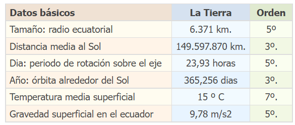

TIERRA
La Tierra es el tercer planeta del sistema solar, en órbita alrededor del Sol entre Venus y Marte, eso es, a 149.600.000 km del Astro Rey. Es el más grande y más denso de los llamados planetas Terrestres, y el quinto en tamaño de los ocho que existen. Es, además, el único planeta hasta la fecha capaz de albergar vida orgánica tal y como la conocemos
Índice
El origen de la Tierra
El origen de la Tierra y de los demás planetas está en la nebulosa solar, un disco de materia remanente de la formación misma del Sol. Se ha calculado que hace 4550 millones de años ya existía la Tierra, después de un período de enfriamiento y constitución de aproximadamente unos 10 a 20 millones de años, cuyo resultado final fue la conformación de las capas exteriores de la superficie terrestre y de la Luna, producto de un impacto entre un cuerpo más o menos del tamaño de Marte con La Tierra hace unos 4530 millones de años.
Luego ocurrió una paulatina desgasificación de la corteza del planeta, que junto a la incipiente actividad volcánica, iniciaron los procesos químicos que darían como resultado la atmósfera terrestre. Similarmente, la aparición del agua de los océanos, preludio a la vida, se debió a la introducción de hielo y agua líquida en cometas, asteroides o protoplanetas que hicieron impacto en la joven Tierra.
El origen de su nombre
Su nombre proviene de la antigua mitología romana: Terra, encarnación de una diosa primigenia a quien se asociaba la femineidad, la fecundidad y el origen de la mayoría de las cosas. Se le asocia con la maternidad en diversas culturas, como la Pachamama de los Incas o la Madre Tierra occidental.
Características físicas de la Tierra
De los planetas terrestres, la Tierra es el más denso, poseedor del campo magnético más intenso y la gravedad superficial más alta. Esto la moldea como una esfera achatada (esferoide oblato) a la altura de sus polos, y abultada ligeramente a la altura del ecuador.
Posee una circunferencia ecuatorial de 40.091 km, un diámetro de 12.756 km y una masa de 5,973 x 1024 kg.
La superficie total de la Tierra es de 510.072.000 km2, de los cuales 70,8% es agua y el 29,2% restante es tierra. El relieve de dicha superficie expuesta es una combinación de montañas, desiertos, llanuras y mesetas, mientras que la sumergida posee cañones, mesetas y dorsales submarinas, así como profundísimas llanuras abisales, donde no llega la luz solar.
La superficie terrestre se modifica a lo largo de los años, debido al movimiento subterráneo de las placas tectónicas, cuyos pliegues y colisiones generan diversos fenómenos de relieve.
El tiempo en Mla Tierra
La Tierra gira en torno a su propio eje, en dirección Oeste-Este, y demora 23 horas, 56 minutos y 4 segundos en completar un giro. Este movimiento da origen al día y la noche, alternando entre la cara expuesta y oculta al Sol
La órbita terrestre alrededor del Sol tiene un perímetro de 930 millones de kilómetros, a una velocidad de 108.000 kilómetros por hora. Eso significa que una vuelta orbital completa se lleva a cabo cada 365 días, 5 horas, 48 minutos y 45 segundos. A dicho período es lo que llamamos comúnmente año.
Datos sobre el planeta Tierra
En la siguiente tabla se muestran algunas medidas de la Tierra. En la última columna, el orden que ocupa cada dato entre los planetas del Sistema Solar:

Galería de imágenes
Referencias
| ◄ Anterior | Siguiente ► |
| Venus | Marte |